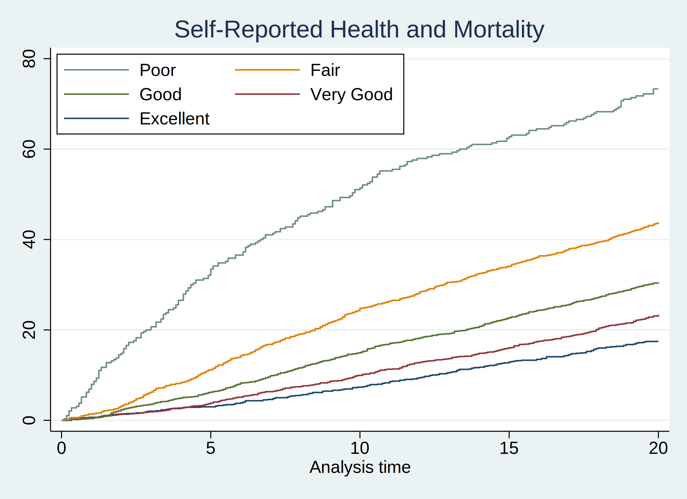
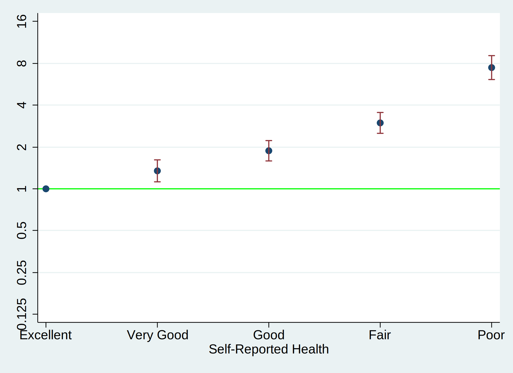
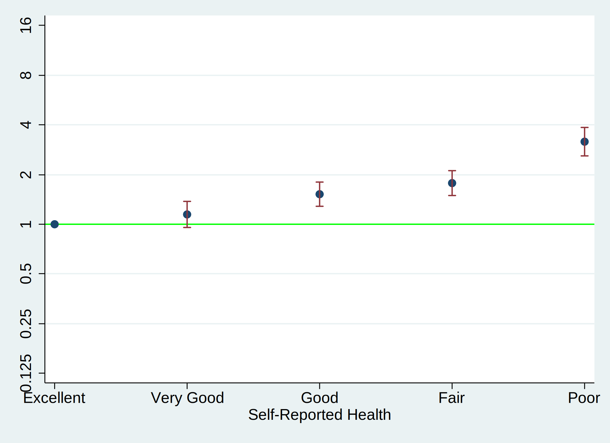

. cls
. //1. data
. global repo "https://github.com/jhustata/project/raw/main/"
. global nhanes "https://wwwn.cdc.gov/Nchs/Nhanes/"
.
. //2. code
. do ${repo}followup.do
. save followup, replace
. import sasxport5 "${nhanes}1999-2000/DEMO.XPT", clear
. merge 1:1 seqn using followup, nogen
. save survey_followup, replace
.
. //3. parameters
. import sasxport5 "${nhanes}1999-2000/HUQ.XPT", clear
. tab huq010
. merge 1:1 seqn using survey_followup, nogen keep(matched)
. rm followup.dta
. rm survey_followup.dta
. g years=permth_int/12
. stset years, fail(mortstat)
. replace huq010=. if huq010==9
. label define huq 1 "Excellent" 2 "Very Good" 3 "Good" 4 "Fair" 5 "Poor"
. label values huq010 huq
. levelsof huq010, local(numlevels)
. local i=1
. foreach l of numlist `numlevels' {
. save week7, replace
. sts graph, ///
> by(huq010) ///
> fail ///
> per(100) ///
> ylab(0(20)80 , ///
> format(%2.0f) ///
> ) ///
> xlab(0(5)20) ///
> tmax(20) ///
> ti("Self-Reported Health and Mortality") ///
> legend( ///
> order(5 4 3 2 1) ///
> lab(1 "$legend1") ///
> lab(2 "$legend2") ///
> lab(3 "$legend3") ///
> lab(4 "$legend4") ///
> lab(5 "$legend5") ///
> ring(0) pos(11) ///
> )
. graph export nonpara.png, replace

. /* -- earlier code --*/
. stcox i.huq010, basesurv(s0)
. matrix define mat = r(table)
. matrix list mat
. matrix mat = mat'
. svmat mat
. preserve
. keep mat*
. drop if missing(mat1)
. rename (mat1 mat2 mat3 mat4 mat5 mat6 mat7 mat8 mat9)(b se z p ll ul df crit e
> form)
. g x=_n
. replace b=log(b)
. replace ll=log(ll)
. replace ul=log(ul)
. twoway (scatter b x) || ///
> (rcap ll ul x, ///
> yline(0, lcol(lime)) ///
> ylab( ///
> -2.08 "0.125" ///
> -1.39 "0.25" ///
> -.69 "0.5" ///
> 0 "1" ///
> .69 "2" ///
> 1.39 "4" ///
> 2.08 "8" ///
> 2.78 "16") ///
> legend(off) ///
> xlab( ///
> 1 "$legend1" ///
> 2 "$legend2" ///
> 3 "$legend3" ///
> 4 "$legend4" ///
> 5 "$legend5") ///
> xti("Self-Reported Health") ///
> )
. graph export semipara_unadj.png, replace
. graph save semipara_unadj.gph, replace
. restore

. preserve
. hist ridageyr
. graph export nonpara.png, replace
. //replace ridageyr=ridageyr/10
. capture drop s0
. stcox i.huq010 ridageyr riagendr, basesurv(s0)
. return list
. matrix define mat_adj=r(table)
. matrix define mat_adj=mat_adj'
. matrix list mat_adj
. svmat mat_adj
. keep mat_adj*
. drop if missing(mat_adj1)
. rename (mat_adj1 mat_adj2 mat_adj3 mat_adj4 mat_adj5 mat_adj6 mat_adj7 mat_adj
> 8 mat_adj9)(b se z p ll ul df crit eform)
. g x=_n
. replace b=log(b)
. replace ll=log(ll)
. replace ul=log(ul)
. twoway (scatter b x if inrange(x,1,5)) || ///
> (rcap ll ul x if inrange(x,1,5), ///
> yline(0, lcol(lime)) ///
> ylab( ///
> -2.08 "0.125" ///
> -1.39 "0.25" ///
> -.69 "0.5" ///
> 0 "1" ///
> .69 "2" ///
> 1.39 "4" ///
> 2.08 "8" ///
> 2.78 "16") ///
> legend(off) ///
> xlab( ///
> 1 "$legend1" ///
> 2 "$legend2" ///
> 3 "$legend3" ///
> 4 "$legend4" ///
> 5 "$legend5") ///
> xti("Self-Reported Health") ///
> )
. graph export semipara_adj.png, replace
. graph save semipara_adj.gph, replace
. restore
